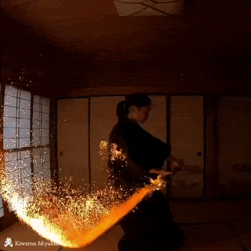

Project Overview
This page is a template for an individual project. Add images, descriptions, galleries, and any details about the project here. Replace this placeholder content with the real project material.

Inspiration
I once saw the video of Kiwamu Miyakubo, a Japanese fire artist who made multiple fire-katanas. These fire-katanas were able to be ignited and release additional flames as needed. The idea of combining fire and metal fascinated me, and I wanted to create a similar effect but with a more practical application in mind.

Deciphering the Secret: Reverse Engineering
However, the details regarding the fire-kanata is kept secret. I must do my own research to find out the key technologies used.
Analysing the videos frame by frame, the katana sword is wrapped with fabric that must've been soaked with liquid fuel. Research on fire artist supplies revealed the flame resistant fabric to be Kevlar, commonly used for bullet-proof vests. The liquid fuel is likely to be kerosene, for that it burns clean and creates a bright orange flame.

How did the kanata release additional flames? The additional flame came out from the tip of the sword, can be seen with yellowish/brownish color before ignition, has a distinctive burning color, and released much more smoke than the liquid fuel. Therefore, I suspected it to be some kind of solid fuel. However, if it was blackpowder, it would've spontaneously exploded in the sword as blackpowder has its own oxidizer. I concluded that it must be a single based solid fuel with a yellow/brown color.
Further research confirmed that the solid fuel is lycopodium, a fine yellow powder used in pyrotechnics and fire effects. It is actually the spores of clubmosses, and the spores contains lipids that act as the source of fuel.

Additional features noted are:
- The katana is a hollow metal tube rather than a solid blade; the tube stores a fine lycopodium‑based solid fuel.
- The handle houses a flint‑and‑wheel ignition mechanism similar to a lighter: the sword can be ignited this way and extinguished by sliding it into its sheath.
- Sparks are produced by metal powder sprinkled into the solid fuel. While magnesium can produce a bright effect, research indicates pyrotechnic shows typically use a low‑conbustion‑temperature alloy for safety.